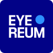

아이리움 Simbol의 가치는 빛이 모이고 초점이 맞춰져, 선명한 시야로 회복되는 과정을 상징합니다.
- 눈
- 밝은 원형 포인트는 아이리움의 출발점인 ‘눈’을 상징합니다.
- 빛
- 푸른 점은 눈에 들어오는 빛과, 시야를 바꾸는 결정적 순간을 나타냅니다.
- 초점
- 분산되지 않고 한 점에 모이는 형태는 정밀하게 맞춰진 초점을 의미합니다.
- 회복된 시야
- 짙은 배경과 밝은 요소의 선명한 대비는 교정 이후의 또렷한 시야를 직관적으로 보여줍니다.
아이리움의 CI는 눈, 빛, 초점, 회복된 시야를 하나의 체계로 정리한 시각 언어입니다. 아이리움이 지향하는 정밀한 의료, 선명한 결과, 흔들림 없는 기준을 담은 신뢰를
전달합니다.
짙은 블루는 의료의 신뢰와 전문성을, 밝은 블루 포인트는 눈에 들어온 빛이 정확한
초점으로 맺히는 순간을 상징합니다. 아이리움의 CI는 결국 더 잘 보이게 하는 기술이 아니라, 더 정확하게 보고 더 분명하게 회복시키는 의료의 기준을 말합니다.

공식 로고의 시인성 확보가 불가능한 환경에서는 배경색에 맞추어 화이트/블랙 단색으로 조정하여 사용합니다.
EYEREUM
Primary Dark Blue
EYEREUM
Secondary Light Blue


* 디지털 환경에서 공식 로고 식별이 어려울 경우, 우측의 베리에이션 로고를 사용합니다.